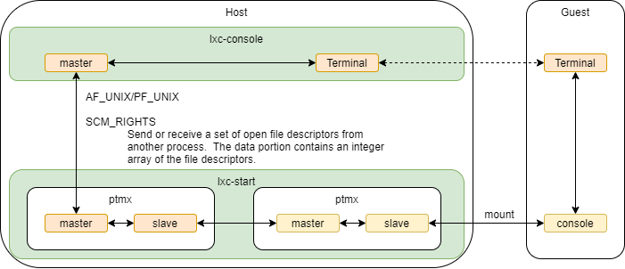

LXC Console get ptmx master
lxc-console是怎么做到跟容器内console通信的
Console
对于BSD是AF，对于POSIX是PF
容器在start的时候会打开ptmx，创建一对虚拟终端，master保留，slave会mount到虚拟机的console节点；
在运行lxc-console的时候，又会打开ptmx，创建一对虚拟终端，master发送到lxc-console，salve会在上面的start进程中和console的master进行数据转发；

* src/lxc/lxccontainer.c
└── static bool lxcapi_start(struct lxc_container *c, int useinit, char *const argv[])
└── ret = do_lxcapi_start(c, useinit, argv);
├── handler = lxc_init_handler(c->name, conf, c->config_path, c->daemonize);
│ ├── handler->conf->maincmd_fd = lxc_cmd_init(name, lxcpath, "command");
│ │ ├── ret = lxc_make_abstract_socket_name(path, sizeof(path), name, lxcpath, NULL, suffix);
│ │ ├── fd = lxc_abstract_unix_open(path, SOCK_STREAM, 0);
│ │ │ ├── fd = socket(PF_UNIX, type | SOCK_CLOEXEC, 0);
│ │ │ ├── len = lxc_abstract_unix_set_sockaddr(&addr, path);
│ │ │ └── ret = bind(fd, (struct sockaddr *)&addr, offsetof(struct sockaddr_un, sun_path) + len + 1);
│ │ └── ret = fcntl(fd, F_SETFD, FD_CLOEXEC);
│ └── TRACE("Unix domain socket %d for command server is ready", handler->conf->maincmd_fd);
└── ret = lxc_start(c->name, argv, handler, c->config_path, c->daemonize, &c->error_num);
└── return __lxc_start(name, handler, &start_ops, &start_arg, lxcpath, daemonize, error_num);
└── ret = lxc_poll(name, handler);
└── ret = lxc_cmd_mainloop_add(name, &descr, handler);
└── ret = lxc_mainloop_add_handler(descr, fd, lxc_cmd_accept, handler);
└── static int lxc_cmd_accept(int fd, uint32_t events, void *data, struct lxc_epoll_descr *descr)
├── connection = accept(fd, NULL, 0);
├── ret = fcntl(connection, F_SETFD, FD_CLOEXEC);
├── ret = setsockopt(connection, SOL_SOCKET, SO_PASSCRED, &opt, sizeof(opt));
└── ret = lxc_mainloop_add_handler(descr, connection, lxc_cmd_handler, data);
└── static int lxc_cmd_handler(int fd, uint32_t events, void *data, struct lxc_epoll_descr *descr)
└── ret = lxc_cmd_process(fd, &req, handler, descr);
└── lxc_cmd_console_callback
└── static int lxc_cmd_console_callback(int fd, struct lxc_cmd_req *req, struct lxc_handler *handler, struct lxc_epoll_descr *descr)
├── masterfd = lxc_terminal_allocate(handler->conf, fd, &ttynum);
│ └── ret = lxc_terminal_peer_proxy_alloc(terminal, sockfd);
│ ├── ret = openpty(&terminal->proxy.master, &terminal->proxy.slave, NULL, NULL, NULL);
│ ├── ret = ttyname_r(terminal->proxy.slave, terminal->proxy.name, sizeof(terminal->proxy.name));
│ ├── ts = lxc_terminal_signal_init(terminal->proxy.master, terminal->master);
│ │ ├── ts->stdinfd = srcfd;
│ │ └── ts->masterfd = dstfd;
│ └── ret = lxc_terminal_mainloop_add_peer(terminal);
│ └── ret = lxc_mainloop_add_handler(terminal->descr, terminal->peer, lxc_terminal_io_cb, terminal);
│ └── int lxc_terminal_io_cb(int fd, uint32_t events, void *data, struct lxc_epoll_descr *descr)
│ ├── w = r = lxc_read_nointr(fd, buf, sizeof(buf));
│ └── w = lxc_write_nointr(terminal->master, buf, r);
└── ret = lxc_abstract_unix_send_fds(fd, &masterfd, 1, &rsp, sizeof(rsp));
└── 将新生成的ptmx master发给lxc-console;
* src/lxc/tools/lxc_console.c
└── int main(int argc, char *argv[])
└── c = lxc_container_new(my_args.name, my_args.lxcpath[0]);
└── c->console = lxcapi_console;
└── static int lxcapi_console(struct lxc_container *c, int ttynum, int stdinfd, int stdoutfd, int stderrfd, int escape)
├── ret = lxc_console(c, ttynum, stdinfd, stdoutfd, stderrfd, escape);
│ └── ttyfd = lxc_cmd_console(c->name, &ttynum, &masterfd, c->config_path);
│ ├── ret = lxc_cmd(name, &cmd, &stopped, lxcpath, NULL);
│ │ └── client_fd = lxc_cmd_send(name, cmd, lxcpath, hashed_sock_name);
│ │ ├── client_fd = lxc_cmd_connect(name, lxcpath, hashed_sock_name, "command");
│ │ │ ├── ret = lxc_make_abstract_socket_name(path, sizeof(path), name, lxcpath, hashed_sock_name, suffix);
│ │ │ └── client_fd = lxc_abstract_unix_connect(path);
│ │ └── ret = lxc_abstract_unix_send_credential(client_fd, &cmd->req, sizeof(cmd->req));
│ ├── rspdata = cmd.rsp.data;
│ ├── ret = cmd.rsp.ret; /* socket fd */
│ ├── *fd = rspdata->masterfd;
│ │ └── console获取到新生成的ptmx master
│ ├── *ttynum = rspdata->ttynum;
│ └── INFO("Alloced fd %d for tty %d via socket %d", *fd, rspdata->ttynum, ret);
├── ts = lxc_terminal_signal_init(stdinfd, masterfd);
├── ret = lxc_mainloop_add_handler(&descr, ts->stdinfd, lxc_terminal_stdin_cb, ts);
│ └── int lxc_terminal_stdin_cb(int fd, uint32_t events, void *cbdata, struct lxc_epoll_descr *descr)
│ ├── ret = lxc_read_nointr(ts->stdinfd, &c, 1);
│ └── ret = lxc_write_nointr(ts->masterfd, &c, 1);
└── ret = lxc_mainloop_add_handler(&descr, ts->masterfd, lxc_terminal_master_cb, ts);
├── r = lxc_read_nointr(fd, buf, sizeof(buf));
└── w = lxc_write_nointr(ts->stdoutfd, buf, r);